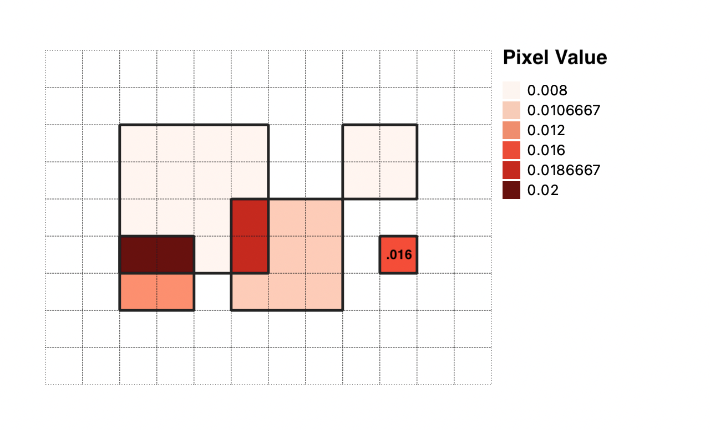

Algorithm Overview¶
Assume two people draw areas important to them. Person one draws 2 polygons (in orange), and Person two draws 3 polygons (in green).
Each person has a total value of 100 that they distribute over those areas.

sapmap then calculates a Spatial Access Priority value for each polygon:
SAP value = importance / area
In this example, the polygon with an importance of 10 is 25 square meters per side or 625 square meters in area. It’s SAP value is calculated as:
10 / 625 square meters = .016 / square meters
This can be read as .016 per square meter. In other words, the value or importance is spread over the area equally.
The polygons are then rasterized by overlaying them with a rectangular grid of pixels. In this example, each grid pixel represents a distinct 25 meter x 25 meter geographic area.

One-by-one, each rasterized polygon is burned-in to the grid, producing a heatmap or aggregate sum of SAP value.

More specifically, for each pixel that a polygon overlaps with, the SAP value of the polygon is assigned to that pixel. The accumulated SAP values for each pixel are summed to produce a final grid, which is output as a geospatial raster image file (GeoTIFF).
Notice that the polygon that had an importance of 10 and a SAP value of .016, results in a pixel SAP value of .016. This is because the polygon was exactly the size of a pixel (25 square meters). The sum of all pixel values is 0.32, so this one pixel (and its geographic area) represents (.016 / .32) = 5% of the overall value or importance.
Map Interpretation¶
The magnitude of a pixels value by itself (e.g. .016) is not important. The real value is in being able to compare one pixel to another, or one group of pixels to another group of pixels. A higher value means more importance to the group. And the loss of access to a geographic area with more value will have a greater cost to the group.
For this reason, Spatial Access Priority maps are frequently used as a cost layer in prioritization software such as Marxan or PrioritizR, to find spatial planning solutions that maximize for certain factors such as ecological abundance or resilience, while minimizing the cost to groups of people that use the area.